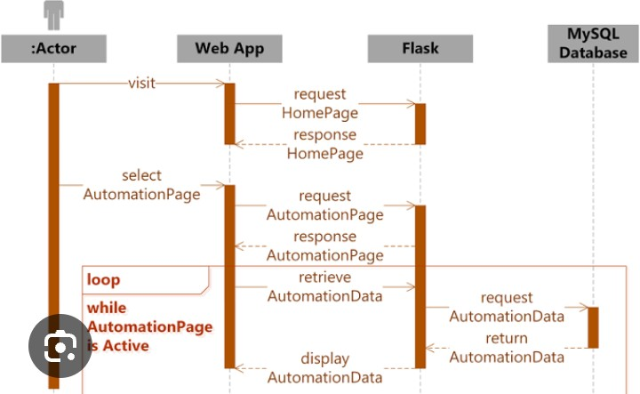
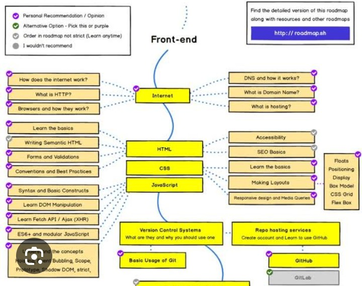
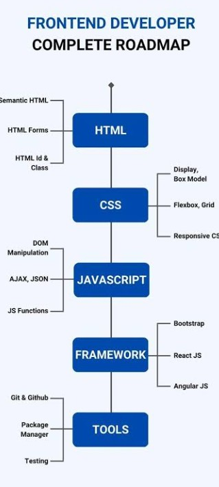

Frontend development is one of the most exciting and rewarding fields in web development. Every website or web application that users interact with visually is built using frontend technologies. From simple personal portfolios to advanced platforms like YouTube, Facebook, and Amazon, the frontend is responsible for creating attractive layouts, responsive interfaces, animations, navigation, and user interactions.
If you are planning to become a frontend developer, following a structured roadmap is extremely important. Instead of learning random technologies, you should master the basics first and then gradually move towards advanced topics. This roadmap will help beginners understand exactly what to learn, in which order, and why each technology is important.

Frontend development is the process of building the visible part of a website that users see and interact with. Frontend developers transform UI/UX designs into functional web pages using HTML, CSS, and JavaScript. Their goal is to create websites that are beautiful, responsive, fast, and easy to use.
HTML (HyperText Markup Language) is the foundation of every website. It defines the structure of web pages using headings, paragraphs, images, links, forms, tables, buttons, videos, and many other elements.
Important HTML topics include:
After learning HTML, the next step is CSS (Cascading Style Sheets). CSS controls the appearance of websites by adding colors, layouts, spacing, typography, animations, and responsive designs.
Essential CSS topics include:
Modern websites must work perfectly on desktops, tablets, and smartphones. Responsive Web Design ensures that layouts automatically adjust according to screen size. Media queries, flexible images, and responsive containers are essential techniques every frontend developer should master.
JavaScript makes websites interactive. It allows developers to create sliders, navigation menus, dark mode, form validation, calculators, games, animations, and dynamic web applications.
Start with these JavaScript concepts:
Mastering HTML, CSS, and JavaScript provides a strong foundation for every frontend developer. Once you become comfortable with these three technologies, you will be ready to learn development tools, version control, frameworks, APIs, and advanced frontend concepts.
After mastering HTML, CSS, and JavaScript, the next important skill is version control. Git helps developers track changes in their code, collaborate with teams, and restore previous versions of projects whenever needed. GitHub is an online platform where developers store, manage, and share their projects.
Every frontend developer should learn basic Git commands such as:
Modern frontend projects use package managers to install libraries and development tools. The most common package managers are npm (Node Package Manager) and Yarn. These tools allow developers to install frameworks, testing libraries, and build tools with a single command.

Once you understand JavaScript, learning a frontend framework becomes much easier. Frameworks help developers build fast, reusable, and scalable user interfaces. React is currently one of the most popular frontend libraries used by companies around the world.
Important React concepts include:
Frontend applications often need data from servers. APIs (Application Programming Interfaces) allow websites to communicate with backend services and display dynamic information such as weather reports, product lists, user accounts, and news articles.
Learn how to fetch data using the Fetch API and understand how JSON works because most modern APIs return data in JSON format.
The best way to improve your frontend skills is by building projects. Practical experience strengthens your understanding and prepares you for real-world development.
Fast websites provide a better user experience and rank higher in search engines. Optimize images, reduce unnecessary CSS and JavaScript, lazy-load images, and minimize HTTP requests to improve performance.
A professional frontend developer always focuses on writing clean, maintainable, and optimized code that performs well on all devices.
After building your projects, the next step is deploying them online. Deployment allows anyone to access your website using a public URL. Free hosting platforms such as GitHub Pages, Netlify, and Vercel make it easy for beginners to publish static websites. Learning deployment is an important skill because recruiters and clients prefer seeing live projects instead of screenshots.
A portfolio website showcases your skills, projects, certifications, and contact information. Include your best work with clear descriptions, GitHub links, and live demos. A clean, responsive portfolio creates a strong first impression and demonstrates your practical knowledge.
Search Engine Optimization (SEO) helps your websites appear in search engine results. Understanding SEO is valuable for frontend developers because it improves website visibility and user experience. Learn how to use semantic HTML, descriptive headings, meta tags, image alt text, and fast-loading pages.

Programming is not only about writing code—it is also about solving problems. Improve your logical thinking by practicing JavaScript challenges, debugging code, and building increasingly complex projects. Regular practice strengthens your confidence and prepares you for technical interviews.
Once you have a solid portfolio and several completed projects, start preparing for interviews. Review HTML, CSS, JavaScript, React, Git, responsive design, APIs, and browser fundamentals. Be ready to explain your projects, the challenges you faced, and how you solved them.
Frontend developers are in demand across startups, software houses, technology companies, and freelance platforms. Career roles include Frontend Developer, Web Developer, React Developer, UI Developer, JavaScript Developer, and Full-Stack Developer after learning backend technologies. Continuous learning and practical experience are the keys to long-term success in this field.
Frontend development is an exciting career that combines creativity with programming. By following a structured roadmap—starting with HTML, CSS, and JavaScript, then learning Git, React, APIs, deployment, SEO, and portfolio development—you can build the skills required to become a professional frontend developer. Stay consistent, build real projects, keep improving your portfolio, and never stop learning. Every project you complete brings you one step closer to becoming a successful developer.